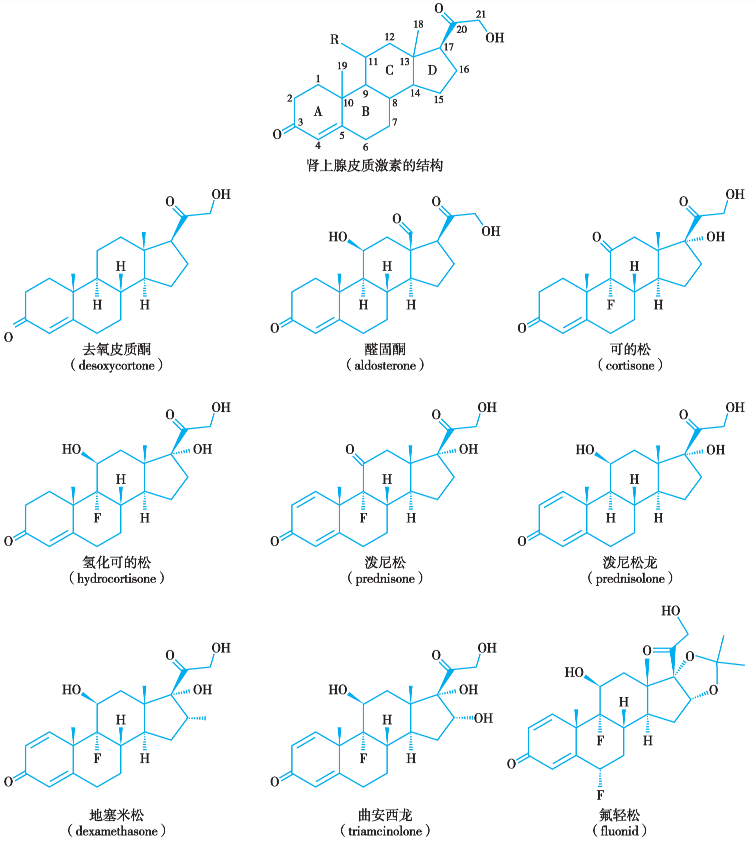
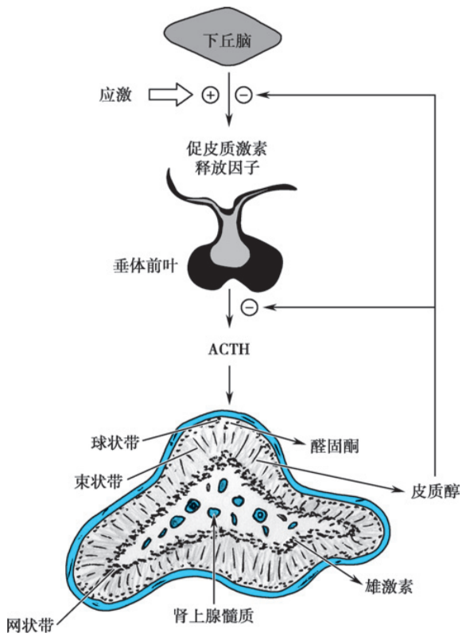

疾病
概述
糖皮质激素（glucocorticoids，GCs）属于甾体类化合物，是肾上腺皮质激素的一种，受下丘脑-垂体-肾上腺（hypothalamic-pituitary-adrenal，HPA）轴调节[285]。
糖皮质激素的作用广泛而复杂，且随剂量不同而变化。
生理情况下主要影响正常物质代谢过程，缺乏时可引起代谢失调甚至死亡；
应激状态时，机体分泌大量的糖皮质激素，通过允许作用等，使机体能适应内外环境变化所产生的强烈刺激；
超生理剂量（药理剂量）时，除影响物质代谢，糖皮质激素还具有抗感染、抗过敏和抑制免疫反应等多种药理作用。
不适当使用或长期大剂量使用糖皮质激素可导致多种不良反应和并发症，甚至危及生命[293]。
结构和生理机制
结构
糖皮质激素的基本结构为甾体（steroids），由三个六元环与一个五元环组成[419]，详见图 2。

分泌与调节
分泌
糖皮质激素属于肾上腺皮质激素，内源性的糖皮质激素主要由肾上腺皮质的束状带分泌（图 1）。
调节
内源性糖皮质激素的分泌主要受下丘脑‐垂体‐肾上腺（hypothalamic-pituitary-adrenal，HPA）轴的调节（图 1）[543]，通过负反馈机制维持体内糖皮质激素水平稳定。
下丘脑分泌促肾上腺皮质激素释放激素（corticotropin releasing hormone，CRH），刺激腺垂体分泌促肾上腺皮质激素（adrenocorticotropic hormone，ACTH），ACTH 作用于肾上腺皮质，促进糖皮质激素的分泌。
反过来，糖皮质激素浓度升高可负反馈抑制下丘脑和腺垂体分泌 CRH 与 ACTH，从而减少自身分泌，ACTH 升高亦抑制 CRH 分泌。
昼夜节律性
正常生理状态下，内源性糖皮质激素的分泌呈脉冲分泌且有昼夜节律性：清晨醒来时达最高水平，下午和夜晚为低水平，夜间睡眠 1～2 小时后最低。
长期大量使用外源性糖皮质激素会破坏正常分泌节律，其通过 HPA 轴负反馈抑制 CRH 与 ACTH 分泌，导致肾上腺皮质停止分泌内源性激素，进而导致肾上腺皮质功能减退，皮质萎缩。

分类
根据来源
内源性激素：氢化可的松（hydrocortisone）、可的松（cortisone）等。
外源性激素：泼尼松（prednisone）、泼尼松龙（prednisolone）、甲泼尼龙（methylprednisolone）、曲安西龙（triamcinolone）、倍他米松（betamethasone）、地塞米松（dexamethasone）等。
根据生物半衰期
分为短效、中效、长效三类。
短效：可的松、氢化可的松；
中效：泼尼松、泼尼松龙、甲泼尼龙、曲安西龙；
长效：地塞米松、倍他米松。
体内过程
吸收与分布
静脉注射、口服、肌肉注射均可吸收。
口服
常规片剂：口服后吸收迅速，肝脏首过效应小，生物利用度高。
布地奈德肠溶胶囊：在胃内几乎不释放药物，只有到达小肠（尤其是远端回肠）后，才因 pH 升高而迅速释放活性成分，靶向肠道相关淋巴组织，从而提高局部生物利用度，同时降低全身血药浓度，减少糖皮质激素相关的系统性副作用[676]。
静脉注射
溶液型注射剂静脉给药后无胃肠吸收过程，起效迅速，适用于急症和危象的抢救。
肌肉注射
溶液型注射剂（水溶性药物）在深部肌内注射后，吸收十分迅速，起效快。正常情况下，可认为与静脉给药的效果等同。
分布
激素在血清中与皮质类固醇结合球蛋白（corticosteroid-binding globulin，CBG）和白蛋白结合。如氢化可的松进入血液后，90% 以上与血浆蛋白呈可逆性结合，其中约 80% 与 CBG 结合，10% 与白蛋白结合，结合后不易进入细胞，因此无生物活性；具有活性的游离型约占 10%。
代谢
主要在肝脏中代谢转化，首先是第 4 位碳（C4）与第 5 位碳（C5）的双键被加氢还原；随之第 3 位碳原子上的酮基由羟基取代，进而羟基与葡萄糖醛酸或硫酸结合由尿中排出。故肝、肾功能不全时，糖皮质激素药物血浆半衰期（t1/2）延长。
可的松和泼尼松需在肝脏转化为氢化可的松和泼尼松龙后才能发挥激素效应，在肝功能障碍患者体内不能有效代谢为活性氢化可的松及泼尼松龙；而氢化可的松、泼尼松龙及甲泼尼龙等不需经肝脏转化便可直接发挥作用，更适用于肝功能受损患者[287]。
半衰期
生物半衰期是评价激素的疗效和不良反应的有效指标，特别是在考虑对 HPA 轴的抑制作用时，而血浆消除半衰期一般用途较少。生物学半衰期比血浆半衰期长。如氢化可的松的血浆 t1/2 为 80～144 分钟，但在 2～8 小时后仍具有生物活性，一次给药作用持续 8～12 小时。
影响因素：
大剂量或肝、肾功能不全者 t1/2 延长；
甲状腺功能亢进时，肝灭活皮质激素加速，t1/2 缩短。
苯巴比妥、苯妥英钠和利福平等肝药酶诱导剂与糖皮质激素药物合用时，会加快其分解，此时需要增加激素的用量。
糖皮质激素的药代动力学参数详见表 3。
具体药物 | 生物利用度（F） | 达峰时间（Tmax） | 血药峰浓度（Cmax） | 表观分布容积（Vd） | 血浆蛋白结合率（PB） | 生物半衰期 | 血浆半衰期（T1/2） | 清除率（CL） |
|---|---|---|---|---|---|---|---|---|
| 短效 | ||||||||
| 氢化可的松「氢化可的松」 | 4-19％（外用） | 24 h（外用） 1~2 h（口服） | 32.69 nmoL/L（口服 0.2~0.3 mg/kg/d） 70.81 nmoL/L（口服 0.4~0.6 mg/kg/d） | 39.82 L（总） 474.38（游离） | 90.1%（血浆蛋白） 56.2%（白蛋白） | 8~12 h | 2.15 h（口服总） 1.39 h（口服游离） 1.9±0.4 h（20 mg IV） | 12.85 L/h（口服总） 235.78 L/h（口服游离） 18.2±4.2 L/h（20 mg IV） |
| 可的松「可的松」 | / | 1~2 h（口服） | / | / | / | 20 min | / | |
| 中效 | ||||||||
| 泼尼松「泼尼松（强的松）」 | / | 2 h（口服） 6-6.5 h（口服缓释） | / | 29.3 L（0.15 mg/kg 的泼尼松龙） 44.2 L（0.30 mg/kg 的泼尼松龙） | <50％ | 18~36 h | 2-3 h | 0.066±0.12 L/h/kg（5.5 µg/h/kg 泼尼松龙） 0.15 L/h/kg（0.15±0.03 L/h/kg 泼尼松龙） |
| 泼尼松龙「泼尼松龙」 | 0.7 | 1.0-2.6 h | 113-1343 ng/mL | 0.15 mg/kg 剂量：29.3 L 0.30 mg/kg 剂量：44.2 L | 65-91％ | 2.1-3.5 h | 0.09 L/kg/h（0.15 mg/kg 泼尼松龙） 0.12 L/kg/h（0.30 mg/kg 泼尼松龙） | |
| 甲泼尼龙「甲泼尼龙」 | 89.9％（口服） 14.2％（直肠） | 2.5 h | / | 1.38 L/kg | 0.768 | 2.3 h | 336 mL/h/kg | |
| 曲安西龙「曲安西龙」 | / | 2.24±0.78 h（口服） 1.74 h（吸入） | 5.23±0.84 ng/mL（口服） 0.92 ng/mL（吸入） | 115.2±10 L | 68% | 2.7 h | 28.6±5.6 L/h | |
| 长效 | ||||||||
| 地塞米松「地塞米松」 | 70~78％ | 2.0±1.2 h（肌内 3.0 mg） 2.0±0.5 h（口服 1.5 mg） | 34.6±6.0 ng/mL（肌内 3.0 mg） 13.9±6.8 ng/mL（口服 1.5 mg） | 96.0 L（肌内 3.0 mg） 51.0 L（口服 1.5 mg） | 77% | 36~54 h | 6.6±4.3 h（口服 1.5 mg） 4.2±1.2 h（肌内 3.0 mg） | 15.6±4.9 L/h（口服 1.5 mg） 9.9±1.4 L/h（肌内 3.0 mg） |
| 倍他米松「倍他米松」 | / | / | / | 94584±23539 mL（肌注） | / | 10.2±2.5 h（肌注） | 6.47±0.81 L/h |
生物学特性
内源性激素的生物学特性
可的松和氢化可的松为短效制剂，同时具有糖和盐皮质激素活性，因此适用于生理性替代治疗。此类剂型结合球蛋白的能力强，游离激素水平较低，对下丘脑-垂体-肾上腺轴的危害较轻，临床上主要用作肾上腺皮质功能不全的替代治疗。
因其抗炎效力弱，作用时间短，不适宜用于治疗慢性自身免疫性疾病。而且用于抗炎治疗时，水钠潴留不良反应明显。
外源性激素的生物学特性
泼尼松、泼尼松龙
泼尼松（强的松）增强了抗炎作用，降低了水钠潴留，并且作用时间延长，是治疗自身免疫性疾病的主要剂型。
其中泼尼松龙（强的松龙）比强的松更适用于肝功能障碍患者。
倍他米松和地塞米松
倍他米松和地塞米松更加强化了抗炎作用，进一步降低了水钠潴留，并且作用时间更长。
但 HPA 轴抑制作用长而强，不宜长期使用，只适合短期使用，因此不适用于治疗慢性的自身免疫性疾病。
其中倍他米松和地塞米松都可安全地用于肝功能障碍患者。
各剂型糖皮质激素的生物学效能比较见表 1。抗炎作用的剂量换算可直接点击工具「激素剂量换算」。
药物 | 对糖皮质激素受体的亲和力比值 | 药理活性 | 等效剂量/mg | ||
|---|---|---|---|---|---|
水盐代谢（比值） | 糖代谢（比值） | 抗炎作用（比值） | |||
| 短效 | |||||
| 氢化可的松 | 1.00 | 1.0 | 1.0 | 1.0 | 20.00 |
| 可的松 | 0.01 | 0.8 | 0.8 | 0.8 | 25.00 |
| 中效 | |||||
| 泼尼松 | 0.05 | 0.8 | 4.0 | 3.5 | 5.00 |
| 泼尼松龙 | 2.20 | 0.8 | 4.0 | 4.0 | 5.00 |
| 甲泼尼龙 | 11.90 | 0.5 | 5.0 | 5.0 | 4.00 |
| 曲安西龙 | 1.90 | 0 | 5.0 | 5.0 | 4.00 |
| 长效 | |||||
| 地塞米松 | 7.10 | 0 | 20~30 | 30 | 0.75 |
| 倍他米松 | 5.40 | 0 | 20~30 | 25~35 | 0.60 |
药理作用与作用机制
糖皮质激素在生理剂量下主要是对机体的物质代谢产生影响，在超生理剂量（药理剂量）时还发挥除了代谢作用外的其他药理作用[293]。
对代谢的影响[543]
糖代谢
糖皮质激素是调节机体糖代谢的重要激素之一，能增加肝糖原和肌糖原含量并升高血糖，机制是：
促进糖原异生，特别是利用肌肉蛋白质代谢中的一些氨基酸及其中间代谢产物作为原料合成糖原；
减少机体组织对葡萄糖的利用；
减慢葡萄糖氧化分解过程，有利于丙酮酸和乳酸等中间代谢产物在肝脏和肾脏再合成葡萄糖，增加血糖的来源。
蛋白质代谢
加速胸腺、肌肉、骨等组织蛋白质分解代谢，增加尿中氮的排泄，造成负氮平衡；大剂量糖皮质激素还能抑制蛋白质合成。故长期用药可出现肌肉消瘦、骨质疏松、皮肤变薄和伤口愈合延缓等。
脂质代谢
短期使用对脂质代谢无明显影响；大剂量长期使用可增高血浆胆固醇、激活四肢皮下脂酶，促使皮下脂肪分解，使脂肪重新分布于面部、胸、背及臀部，形成向心性肥胖，表现为“满月脸，水牛背”，呈现面圆、背厚、躯干部发胖而四肢消瘦的特殊体形。
核酸代谢
糖皮质激素对核酸代谢的影响主要是通过影响敏感组织中的核酸代谢来实现的。研究显示氢化可的松可诱导合成某种特殊的 mRNA，表达一种抑制细胞膜转运功能的蛋白质，从而抑制细胞对能源物质的摄取，而且多种糖皮质激素均可以影响 DNA/RNA 代谢关键酶活性，诱导敏感组织（如淋巴细胞）DNA 降解，以致细胞核酸合成代谢受到抑制，而分解代谢增强。
水和电解质代谢
糖皮质激素通过作用于盐皮质激素受体产生较弱的盐皮质激素样潴钠排钾作用。
它能增加肾小球滤过率和拮抗抗利尿激素的作用，减少肾小管对水的重吸收，故有利尿作用。
长期用药将造成骨质脱钙，可能与其减少小肠对钙的吸收和抑制肾小管对钙的重吸收、促进尿钙排泄有关。
抗炎作用[543]
糖皮质激素具有强大的抗炎作用，能抑制物理性、化学性、免疫性及病原生物性等多种原因所引起的炎症反应。
在急性炎症早期，通过增高血管的紧张性、减轻充血、降低毛细血管的通透性，同时抑制白细胞浸润及吞噬反应，减少各种炎症因子的释放，减轻渗出、水肿，改善红、肿、热、痛等症状。
在炎症后期，糖皮质激素通过抑制毛细血管和成纤维细胞的增生，抑制胶原蛋白、黏多糖的合成及肉芽组织增生，防止粘连及瘢痕形成，减轻后遗症。
但须注意的是，炎症反应是机体的一种防御性机制，炎症反应的后期更是组织修复的重要过程。因此，糖皮质激素在抑制炎症及减轻症状的同时也可导致感染扩散、创面愈合延迟。
免疫抑制与抗过敏作用[543]
免疫抑制作用
糖皮质激素对免疫过程的多个环节均有抑制作用。
小剂量糖皮质激素主要抑制细胞免疫，大剂量则能抑制由 B 细胞转化成浆细胞的过程，减少抗体生成干扰体液免疫。
糖皮质激素不能使正常人淋巴细胞溶解，也不能使免疫球蛋白合成或补体代谢明显下降，更不能抑制特异性抗体的合成。
糖皮质激素能干扰淋巴组织在抗原作用下的分裂和增殖，阻断致敏 T 淋巴细胞所诱发的单核细胞和巨噬细胞的聚集等，从而抑制组织器官的移植排斥反应和皮肤迟发性过敏反应。
此外，对于自身免疫性疾病也能发挥一定的近期疗效。
抗过敏作用
在免疫过程中，由于抗原-抗体反应引起肥大细胞脱颗粒而释放组胺、5-羟色胺、过敏性慢反应物质和缓激肽等，从而引起一系列过敏性反应症状。糖皮质激素被认为能减少上述过敏介质的产生，抑制因过敏反应而产生的病理变化，从而减轻过敏性症状。
抗休克作用[543]
常用于严重休克，特别是感染中毒性休克的治疗。大剂量糖皮质激素抗休克作用的可能机制：
抑制某些炎症因子的产生，减轻全身炎症反应综合征及组织损伤，使微循环血流动力学恢复正常，改善休克状态；
稳定溶酶体膜，减少心肌抑制因子（myocardial depressant factor，MDF）的形成；
扩张痉挛收缩的血管和兴奋心脏、加强心脏收缩力；
提高机体对细菌内毒素的耐受力。但对外毒素则无防御作用。
其他作用[543]
允许作用
糖皮质激素对有些组织细胞虽无直接活性，但可给其他激素发挥作用创造有利条件，称为允许作用。例如糖皮质激素可增强儿茶酚胺的血管收缩作用和胰高血糖素的血糖升高作用等。
退热作用
用于严重的中毒性感染，常具有迅速而良好的退热作用。可能与其能抑制体温中枢对致热原的反应、稳定溶酶体膜、减少内源性致热原的释放有关。
血液与造血系统的影响
糖皮质激素能刺激骨髓造血功能，使红细胞和血红蛋白含量增加，大剂量可使血小板增多、提高纤维蛋白原浓度，并缩短凝血酶原时间；
刺激骨髓中的中性粒细胞释放入血而使中性粒细胞计数增多，却降低其游走、吞噬、消化及糖酵解等功能，因而减弱对炎症区域的浸润与吞噬活动。
糖皮质激素可使血液中淋巴细胞减少。
临床发现肾上腺皮质功能减退者淋巴组织增生、淋巴细胞增多；而肾上腺皮质功能亢进者淋巴细胞减少、淋巴组织萎缩。
中枢神经系统的影响
提高中枢的兴奋性。
大量长期应用糖皮质激素，可引起部分患者欣快、激动、失眠等，偶可诱发精神失常；
能降低大脑的电兴奋阈，促使癫痫发作，故精神病患者和癫痫患者宜慎用。
大剂量应用可致儿童惊厥。
骨骼的影响
长期大量应用本类药物时可出现骨质疏松，特别是脊椎骨，故可引起腰背痛，甚至发生压缩性骨折、鱼骨样及楔形畸形。其机制可能是糖皮质激素抑制成骨细胞的活力、减少骨中胶原的合成、促进胶原和骨基质的分解、使骨质形成发生障碍。
心血管系统的影响
糖皮质激素增强血管对其他活性物质的反应性，可以增加血管壁肾上腺素受体的表达。在糖皮质激素分泌过多的 Cushing 综合征和一小部分应用合成的糖皮质激素的患者中，可出现高血压。
因糖皮质激素涉及的疾病很多，无法在本词条里一一阐述，因此本词条只介绍常规的用药原则，以及临床中的常见问题，具体疾病中激素的用药方案请详见各疾病词条。
用药原则
治疗疗程[286]
根据疗程长短，糖皮质激素的治疗分为冲击、短程、中程、长程治疗四类。所有疗程均需配合其他有效治疗措施。
冲击治疗
适应证：危重患者的抢救，如狼疮脑病、重症药疹、重症肌无力（有呼吸机支持时）、自身免疫性边缘叶脑炎等。
疗程：一般使用≤5d。冲击治疗因疗程短可迅速停药，若无效可在短时间内重复应用。
不良反应：明显，尤其容易继发感染。
短程治疗
适应证：应激性治疗，或感染及变态反应类疾病所致的严重器质性损伤，如结核性脑膜炎及胸膜炎、剥脱性皮炎、器官移植急性排斥反应等。
疗程：一般使用＜1 个月，停药时需逐渐减量以至停药。
中程治疗
适应证：病程较长且多器官受累的疾病，如风湿热等。
疗程：
治疗剂量起效后减至维持量，逐渐递减直至停药，一般使用＜3 个月。
某些特殊疾病，如活动性甲状腺眼病，使用激素每周 1 次冲击治疗，一般维持 12 周[415-416]。
长程治疗
适应证：适用于预防和治疗器官移植后排斥反应及反复发作的多器官受累的慢性系统性自身免疫性疾病，如系统性红斑狼疮、类风湿关节炎、血小板减少性紫癜、溶血性贫血、肾病综合征等。
疗程：可采用每日或隔日给药。逐步减量至最低有效维持剂量，停药前需逐步过渡到隔日疗法。使用一般>3 个月。
每日清晨一次给药法
一般采用短效类的可的松或氢化可的松，在每日清晨 7～8 时一次服用。与内源性激素昼夜节律重合，减少对垂体-肾上腺轴抑制及不良反应。
隔日清晨给药法
每隔一日，早晨 7～8 时给药 1 次。首选中效类的激素（泼尼松或泼尼松龙），可减轻对内源性皮质激素分泌的抑制作用。
替代治疗
长程替代方案
适用于原发或继发性慢性肾上腺皮质功能减退症。
应急替代方案
适用于急性肾上腺皮质功能不全及肾上腺危象。
抑制替代方案
适用于先天性肾上腺皮质增生症。
给药剂量[286-287]
冲击剂量
以泼尼松为例，500~1000 mg/d，疗程多小于 5d，后减到 1~2 mg/（kg·d）；
以甲泼尼龙为例，7.5~30 mg/（kg·d）。
大剂量
以泼尼松为例，>1 mg/（kg·d），多见于冲击剂量减药过渡方案，一般不超过 5~7d；
也可见于有冲击治疗指征而顾忌感染等并发症的妥协方案。
中等剂量
以泼尼松为例，0.5~1 mg/（kg·d）。
小剂量
以泼尼松为例，<0.5 mg/（kg·d）。
长期服药维持剂量
以泼尼松为例，2.5~15 mg/d。
需要注意的是，具体疾病的剂量请查看相关疾病词条，以获取更精准的循证学建议。
撤药原则[287]
短疗程者可快速减药，长疗程者需缓慢减药，遵循“先快后慢”原则。具体建议如下：
激素疗程在 7d 之内者，可以直接停药，而超过 7d 者，则需要先减药后撤药；
泼尼松 30 mg/d x 2 周者：可以每 3~5d 减少泼尼松 5 mg/d 的剂量；
泼尼松 50 mg/d x 4~8 周者：需要每 1~2 周减少泼尼松 5 mg/d 的剂量，至 20 mg 左右后每 2~4 周减 5 mg。若在减药过程中病情反复，可酌情增加剂量。
不良反应
长期大剂量应用引起的不良反应
医源性肾上腺皮质功能亢进
又称类肾上腺皮质功能亢进综合征，指长期过量激素引起脂质代谢和水盐代谢的紊乱，表现为满月脸、水牛背、皮肤变薄、多毛、水肿、低钾血症、高血压、糖尿病等，停药后症状可自行消失。
诱发或加重感染
长期应用可诱发感染或使体内潜在的感染病灶扩散，特别是在原有疾病已使抵抗力降低的白血病、再生障碍性贫血、肾病综合征等患者更易发生。
对于无有效药物可控制的感染（如病毒感染），应慎用或禁用糖皮质激素。
消化系统并发症
激素可刺激胃酸、胃蛋白酶的分泌并抑制胃黏液分泌，降低胃肠黏膜的抵抗力，故可诱发或加剧胃、十二指肠溃疡，甚至造成消化道出血或穿孔。
少数患者可诱发胰腺炎或脂肪肝。
心血管系统并发症
长期应用，由于水钠潴留和血脂升高，可引起高血压和动脉粥样硬化。
骨骼肌肉系统并发症
骨质疏松、肌肉萎缩、伤口愈合迟缓等，与糖皮质激素促蛋白质分解、抑制其合成及增加钙、磷排泄有关。
骨质疏松多见于儿童、绝经妇女和老人。严重者可发生自发性骨折。
由于抑制生长激素的分泌和造成负氮平衡，还可影响生长发育。
脂肪栓塞可引起股骨头无菌性缺血坏死。
糖尿病
可促进糖原异生，降低组织对葡萄糖的利用，因而长期应用超生理剂量糖皮质激素者，将引起糖代谢的紊乱，半数患者出现糖耐量受损或糖尿病（类固醇性糖尿病）。
糖皮质激素性青光眼
多发生于对激素中、高度反应者，其临床表现与原发性开角型青光眼相似，应注意区别。在使用糖皮质激素时要定期检查眼内压、眼底、视野，以减少糖皮质激素性青光眼的发生。
其他
可诱发或加重精神疾病。
停药反应
如连续使用泼尼松（20~30 mg/d）2 周以上突然停药，则可能出现肾上腺皮质功能不全的停药反应。
医源性肾上腺皮质功能不全
由于长期大剂量使用糖皮质激素，反馈性抑制垂体-肾上腺皮质轴致肾上腺皮质萎缩所致。
长期应用尤其是每天给药的患者，减量过快或突然停药，特别是当遇到感染、创伤、手术等严重应激情况时，可引起肾上腺皮质功能不全或危象，表现为恶心、呕吐、乏力、低血压和休克等，须及时抢救。
恢复：肾上腺皮质功能的恢复时间与剂量、用药时间长短和个体差异等有关。停用激素后，垂体分泌 ACTH 的功能一般需经 3～5 个月才能恢复；肾上腺皮质对 ACTH 起反应功能的恢复需 6～9 个月，甚至长达 1～2 年。
预防措施
不可骤然停药，须缓慢减量，停用糖皮质激素后连续应用促肾上腺皮质激素（ACTH）7 天左右；
在停药 1 年内如遇应激情况（如感染或手术等），应及时给予足量的糖皮质激素。
反跳现象
指突然停药或减量过快而致原有症状的复发或恶化。常需加大剂量再行治疗，待症状缓解后再缓慢减量、停药。
糖皮质激素抵抗
大剂量糖皮质激素治疗疗效很差或无效称为糖皮质激素抵抗。此时对患者盲目加大剂量和延长疗程不但无效，而且会引起严重的后果。
禁忌证
活动性消化性溃疡病，新近胃肠吻合术，骨折，创伤修复期，角膜溃疡，肾上腺皮质功能亢进症，严重高血压，抗菌药物不能控制的感染如水痘、麻疹、真菌感染等禁用；
严重精神失常、癫痫病史者禁用或慎用。
特殊人群使用
哺乳妊娠患者
妊娠期
妊娠期应用糖皮质激素应严格掌握指征和选用合理的治疗方法。
对有早产风险的女性给予产前糖皮质激素治疗能显著降低新生儿呼吸窘迫综合征、脑室内出血、坏死性小肠结肠炎、脓毒症及新生儿死亡的发生率[401]。
妊娠早期勿用含氟激素。
最常用的短中效糖皮质激素是泼尼松、泼尼松龙和甲泼尼龙；
最常用的长效药物是地塞米松和倍他米松。
使用激素时，应用最低有效剂量。
哺乳期
母乳中的糖皮质激素浓度很低，生理或维持剂量的糖皮质激素对婴儿一般无严重不良影响。
因为母乳中药物浓度在用药后 2 h 达到峰值，建议丢弃用药后 4 h 内的母乳。
哺乳妇女接受中等以上剂量的糖皮质激素不推荐哺乳[286]。
常用糖皮质激素哺乳妊娠分级及安全性信息详见表 9。
| 药物名称 | 透过胎盘比例 | 治疗重点 | 食品药品监督管理局（FDA）危险分级 | 哺乳分级 | |
|---|---|---|---|---|---|
| （氢化）可的松 | 10%～15%（85% 经胎盘代谢失活为可的松） | 主要用于治疗孕妇疾患 | D（1～3 月）/C | 轻微致畸和毒性作用，但用药的益处远大于危险性，应权衡利弊 | L2/L3 |
| 泼尼松（龙） | 10%~12%[294-295]（经胎盘代谢失活为泼尼松） | 可同时治疗孕妇和胎儿疾患 | D（1～3 月）/C | 广泛使用，有轻微致畸作用 | L2 |
| 甲泼尼龙 | 44.6%[294-295] | 主要用于治疗孕妇疾患 | C | 仅在仔细评估对母亲和胎儿的获益风险比后才可使用 | L2 |
| 地塞米松 | 46%～54% 经胎盘代谢失活 | 主要用于治疗胎儿疾患 | D（1～3 月）/C | 孕妇益处远大于胎儿危险，目前尚无资料证明存在危险性 | L3 |
| 倍他米松 | 比例未知 | 主要用于治疗孕妇疾患 | C | 孕妇及哺乳期妇女在权衡利弊情况下，尽可能避免使用 | L3 |
儿童患者
儿童长期应用糖皮质激素应严格掌握指征和选用合理的治疗方法。
应根据年龄、体重（或体表面积）、疾病严重程度和患儿对治疗的反应确定治疗方案。
接受糖皮质激素的儿童中生长障碍最常见，尤其在接受长程每日疗法时。
与成人相比，儿童更易发生白内障[403]。
老年患者
老年患者用糖皮质激素易发生高血压、糖尿病，尤其是更年期后的女性应用糖皮质激素易加重骨质疏松；
老年患者的肝、肾或心脏功能降低以及伴随疾病或其他药物治疗的频率较高，因此剂量选择应谨慎，通常从剂量范围的下限开始治疗。
肝肾功能不全患者
常用糖皮质激素在肝肾功能不全患者中的应用详见表 10。
临床常见问题
全身用激素可用于哪些疾病？
糖皮质激素广泛用于各类急危重疾病的救护治疗中。大致分为五大类疾病[420]：
急性或暴发性感染：肺炎、脑膜炎、病毒性心肌炎、脓毒性休克等；
自身免疫性疾病急性发作：系统性红斑狼疮、原发性免疫性血小板减少症、自身免疫性溶血性贫血等；
过敏性疾病重症或急性发作期：过敏性休克、过敏性哮喘急性发作、过敏性重症药疹等；
内分泌急症：肾上腺危象、甲状腺危象、亚急性甲状腺炎发作期等；
急性创伤性疾病：在进入休克失代偿期后，如外伤骨折、急性脊髓损伤、脂肪栓塞综合征等。
什么情况下需要围术期应用糖皮质激素？
外科手术创伤可导致应激反应，引起组织损伤、缺血缺氧、炎症反应等，而糖皮质激素可以抑制术后炎症反应、提升缺血缺氧耐受力、调节心肺功能，并减少呼吸系统及多脏器并发症。
糖皮质激素在围手术期的应用主要包括防治术后恶心呕吐、辅助镇痛治疗、减轻水肿、降低术后炎症反应、围手术期气道管理、改善神经功能、过敏反应的治疗、抑制器官移植排斥反应等[610]。
应用时需权衡利弊，严格掌握适应证、规范用药，并监测不良反应[610]。
使用糖皮质激素时需要注意什么？
为尽可能减少激素使用的不良反应，在激素治疗时应避免长期用药，并应严格掌握使用剂量。
使用期间注意监测血压、白细胞计数、肝肾功能、血电解质、血糖和出凝血功能等指标。
观察精神状况。
严密监测潜在的细菌或真菌感染风险。
注意药物间的相互作用。
对于糖尿病或高血压病情控制不佳，活动性消化道出血，或存在免疫功能低下等基础疾病患者，应慎用激素，并通过多学科会诊，给予指导建议。
糖皮质激素的剂量如何个体化调整？
糖皮质激素剂量的个体化调整应根据疾病类型、严重程度、患者体重、合并症及应激状态动态调整[596,602]。
长期用药时应采用最低有效剂量，优选早晨单次给药或隔日疗法以减少不良反应[596,602]。
应激状态下（如感染、手术、创伤）需临时增加剂量，如轻度应激时泼尼松剂量可调整至 10 mg/日，重度应激时可按体重和临床状况调整[596,602]。
静脉用糖皮质激素如何选择溶媒？
静脉用糖皮质激素的溶媒选择应严格遵循药品说明书的规定，不同药物的推荐溶媒如下：
甲泼尼龙：溶媒可选择使用 5% 葡萄糖注射液、生理盐水（0.9% 氯化钠）或 5% 葡萄糖生理盐水作为溶媒进行稀释和静脉输注[674]。
氢化可的松琥珀酸钠：溶媒为水[419]。
氢化可的松注射液：溶媒为酒精，用于酒精过敏者可能引起过敏反应，且与部分头孢类抗生素一起使用时可能导致双硫仑样反应[419]。
地塞米松磷酸钠注射液：溶媒为 5% 葡萄糖注射液[673]。
糖皮质激素长期使用会导致哪些感染风险？
长期使用显著增加细菌、病毒、真菌及寄生虫感染风险[547-550]。
其中最常见的感染类型是下呼吸道感染（如肺炎）、尿路感染、皮肤和软组织感染（如蜂窝织炎）、结膜炎和带状疱疹。
机会性感染风险也显著升高，尤其是肺孢子菌肺炎、侵袭性真菌感染（如曲霉菌、念珠菌）、结核病、线虫病和巨细胞病毒感染。
哪些人群使用糖皮质激素易发生感染？
在合并其他免疫抑制药物或基础疾病（如恶性肿瘤、器官移植、风湿免疫病）患者更易发生感染。
此外，老年人、糖尿病患者、低白蛋白血症者的感染风险较高[544,547,551-553]。
糖皮质激素治疗中如何预防和治疗肺孢子菌感染？
预防
每日泼尼松等效剂量≥20 mg 且持续≥4 周的患者，建议药物预防肺孢子菌肺炎[547-550]，详细内容参考「肺孢子菌肺炎-预防」。
肺孢子菌感染常表现为孢子菌肺炎，病情进展快，表现为发热、干咳、呼吸困难、胸痛，可致呼吸衰竭、死亡。体格检查肺部阳性体征少，或可闻及少量散在的干湿啰音，体温可正常或低热，少数在 38.5～39℃。
治疗方案
首选复方磺胺甲噁唑［SMZ 75 mg/（kg·d）+TMP 15 mg/（kg·d）］，疗程 21 天，如果合并明显的低氧血症（呼吸空气时氧分压＜70 mmHg），需静脉用药，同时加用口服或者静脉糖皮质激素。
如磺胺药物过敏可行脱敏治疗或选用克林霉素+伯氨喹，棘白菌素类抗真菌药物如卡泊芬净也有一定的疗效。
详细内容参考「肺孢子菌肺炎-治疗」。
使用糖皮质激素的患者能否接种疫苗？
灭活疫苗
通常安全，可按照常规疫苗接种时间表进行疫苗接种[404]。
活病毒疫苗
接种活疫苗会增加细菌、真菌、病毒和不常见病原体的感染风险。仅限以下情况：
剂量小于 20 mg/d 的泼尼松或等效剂量其他药物，用药时间≤14d；
长期生理性替代治疗；
隔日服用糖皮质激素的短效制剂；
使用中等或高剂量（>20 mg/d），且用药时间预期大于 14d 的患者，需在激素使用前 2~4 周进行接种[406]。在激素停用 1 个月内不可接种活病毒疫苗[407]。
需要注意的是，糖皮质激素治疗会减弱机体固有的免疫系统防御能力，减少循环中 T 细胞和 B 细胞，会降低疫苗诱导的免疫强度和持续时间[404]。
哪些糖皮质激素更容易导致激素相关性青光眼？
在所有糖皮质激素中，曲安奈德和地塞米松更容易导致激素相关性青光眼，尤其是通过眼部局部或玻璃体内给药时，临床使用时需密切监测眼压并警惕青光眼发生[611-613]。
一项研究发现，曲安奈德和磷酸倍他米松在眼部应用时更易导致眼压升高。
另一项回顾性研究显示[611-613]，玻璃体内地塞米松植入剂和曲安奈德注射后，眼压升高发生率分别为 41% 和 30%，均高于眼周曲安奈德（20%）。
此外[612]，玻璃体内地塞米松单用或与其他激素联合用药时，眼压升高发生率更高[613]。
青光眼的风险还与给药途径、剂量及持续时间相关，局部眼用、玻璃体内、眼周注射风险最大；系统性、吸入风险较低，但长期高剂量仍可诱发[614-615]。
糖皮质激素相关精神障碍有什么临床表现？
可表现为或诱发多种精神疾病，包括抑郁、躁狂/轻躁狂、焦虑、精神病性症状（如幻觉、妄想）、谵妄、认知障碍、失眠、行为改变、人格改变、记忆和注意力减退等。具体表现如下：
抑郁症：最常见，尤其在长期用药后，表现为情绪低落、兴趣减退、易激惹、睡眠障碍等。
躁狂症/双相障碍：急性用药时更易出现躁狂或轻躁狂症状，如情绪高涨、精力旺盛、冲动行为等。
精神分裂症样障碍/精神病性障碍：部分患者可出现幻觉、妄想、思维紊乱等精神病性症状，尤其在高剂量或有精神病史者中更常见[618,620,624-625]。
谵妄和认知障碍：老年人和高剂量使用者易出现谵妄、意识障碍、记忆力下降等。
焦虑障碍、恐慌障碍：部分患者表现为焦虑、恐慌发作、强迫症状等[618,622,625]。
此外，糖皮质激素还可增加自杀风险，尤其在有既往精神病史或高剂量使用者中[622,626]。
这些症状可在用药初期或长期治疗过程中出现，且与激素剂量密切相关，高剂量和长期使用风险更高[616-620]。多数精神症状在减量或停药后可缓解，但部分患者需精神科药物干预[616,618,622,624]。
因此，使用糖皮质激素时需要动态评估患者的精神状态，尤其在有精神疾病史、老年、女性及高剂量用药者中。
糖皮质激素是否会诱发胰腺炎？
糖皮质激素可诱发胰腺炎，机制尚不明确，可能与基因转录调控有关。尤其是在口服使用后 4 至 14 天内风险最高，但风险会随时间推移而减弱[566]。
糖皮质激素长期用药如何减少肾上腺轴的抑制？
优先选择短效或中效制剂（如泼尼松、氢化可的松），避免长期使用长效制剂（如地塞米松）。
采用最低有效剂量和最短疗程，逐步减量，避免夜间给药。
停药前需评估肾上腺功能，必要时进行晨间皮质醇检测，确保肾上腺轴的恢复[596,602]。
如何治疗长期使用糖皮质激素导致的肾上腺皮质功能减退症？
糖皮质激素长期使用后不适当减量可导致肾上腺皮质功能减退[420]。
当急性病患者存在如下症状或体征表现时，如容量减少、低血压、低钠血症、高钾血症、发热、腹痛、色素沉着过度和低血糖，需考虑原发性肾上腺皮质功能减退的可能[420]。
治疗方案
糖皮质激素替代疗法
首选氢化可的松，分次给药。
每天口服氢化可的松（15~25 mg）或醋酸可的松（20~35 mg），分 2 次或 3 次，最高剂量在早晨醒来时给予，第 2 次在午餐后 2 h 给予或午餐和下午分 3 次给予。
依从性较差患者可以每日口服 1 次或 2 次泼尼松龙（3~5 mg/d），作为氢化可的松的替代治疗[453]。
盐皮质激素替代治疗
目前不推荐常规使用盐皮质激素替代治疗（如氟氢可的松），因为此类患者中往往仍有盐皮质激素分泌功能[670]。
除非被确诊为醛固酮缺乏症的患者，可接受盐皮质激素替代治疗，根据嗜盐程度、体位性低血压或水肿等表现和血电解质水平调整盐皮质激素剂量[420]。
是否需要终身治疗
绝大多数因长期使用糖皮质激素导致肾上腺皮质功能减退症的患者，最终可以恢复肾上腺功能并停用激素替代治疗，但恢复过程可能需要数月到数年，且必须通过晨间皮质醇或 ACTH 刺激试验确认功能恢复后方可停药[671-672]。
少数患者在停用糖皮质激素 2-4 年后仍持续肾上腺功能减退，提示肾上腺功能极难恢复，这类患者可能需要终身激素替代治疗[671-672]。
更多治疗方案的详细内容参考「原发性肾上腺皮质功能不全-治疗」。
如何治疗糖皮质激素相关的肾上腺皮质危象？
定义
原发或继发性，急性或慢性肾上腺皮质功能减退患者骤然停服糖皮质激素时会出现一系列临床表现：高热，胃肠紊乱，循环虚脱，神志淡漠、萎靡或躁动不安，谵妄甚至昏迷，称为肾上腺皮质危象[420]。
治疗方案
在高度怀疑肾上腺危象的患者中，在诊断试验结果未出情况下，即可开始适当剂量的氢化可的松静脉注射治疗。静脉 100 mg（儿童 50 mg/m2）氢化可的松治疗，然后进行适当的液体复苏和 200 mg（儿童 50~100 mg/m2）氢化可的松 24 h 静脉持续注射或分成 50 mg（儿童 12.5~25 mg/m2）每 6 h 静脉滴注[453]。
如果氢化可的松无法获取，可用泼尼松龙作为替代。在没有其他糖皮质激素可用的情况下最后考虑使用地塞米松。
更多治疗方案的详细内容参考「肾上腺危象-治疗」。
糖皮质激素撤药综合征有哪些表现？
糖皮质激素撤药综合征的临床表现主要包括乏力、恶心、肌肉关节痛、睡眠障碍、情绪波动、体重减轻、低血压等，部分症状与肾上腺功能不全和原发疾病的复发重叠，需进行鉴别[596,602]。
糖皮质激素会导致中性粒细胞和白细胞升高吗
会，这是临床上非常常见的现象[627-635]。
急性或慢性糖皮质激素治疗的患者，白细胞计数平均可升高约 5×10⁹/L，且中性粒细胞升高最为明显。
这种升高通常在用药后数小时至一天内出现，且与激素剂量相关[628,630,633-635]。
机制
主要包括促进中性粒细胞从血管壁游离进入循环、减少中性粒细胞向炎症部位迁移、延长中性粒细胞寿命，以及动员骨髓储备的中性粒细胞进入外周血[627-633]。
与感染鉴别
需要注意的是，糖皮质激素引起的白细胞和中性粒细胞升高并不代表感染或炎症加重，而是药物的生理效应。临床判断是否感染时应结合其他指标，如 C 反应蛋白、降钙素原、影像学检查等[635]。
糖皮质激素对血脂有什么影响？
长期或高剂量糖皮质激素治疗可导致血脂异常，表现为总胆固醇、低密度脂蛋白胆固醇（Low density lipoprotein cholesterol，LDL-C）、甘油三酯（triglyceride，TG）升高，部分情况下高密度脂蛋白胆固醇（High-density lipoprotein cholesterol，HDL-C）也升高。这种影响与激素剂量、用药时间、基础疾病及个体代谢状态密切相关。
短期激素治疗也可使总胆固醇和 LDL-C 快速升高，HDL-C 轻度升高，TG 变化不明显[636-641]。
机制
机制包括促进肝脏脂肪酸和胆固醇合成、减少脂蛋白清除、增加脂肪组织脂肪生成和分布异常。
此外，糖皮质激素可促进肝脏脂肪酸新生和脂肪酶活性变化，导致脂肪酸代谢紊乱，进一步加重血脂异常[642]。
干预措施
糖皮质激素诱导的血脂异常与心血管疾病风险增加相关，尤其是高剂量和长期用药者，应常规评估和管理血脂及其他心血管危险因素[636,640]。详细内容参考「血脂异常-治疗」。
化疗前使用糖皮质激素的用途？
化疗前使用糖皮质激素主要有以下几个用途：
预防和减轻化疗相关不良反应
糖皮质激素（如地塞米松）是预防和治疗化疗引起的恶心、呕吐的核心药物，尤其在中、高度致吐性化疗方案中，常与 5-HT3 受体拮抗剂、NK1 受体拮抗剂联合使用，能显著降低急性和延迟性恶心呕吐发生率[643-644]。
预防过敏和超敏反应
部分化疗药物（如紫杉醇、顺铂等）易引发过敏反应，糖皮质激素可作为预防性用药，降低超敏反应风险[645-648]。
减少化疗骨髓抑制和其他毒性
糖皮质激素可减轻化疗相关的骨髓抑制、发热、炎症反应等毒性，部分研究显示地塞米松预处理可降低粒细胞和血小板减少发生率，并改善患者生存和缓解率[649-652]。
辅助抗肿瘤作用（血液肿瘤）
在急性淋巴细胞白血病等血液系统肿瘤中，糖皮质激素本身具有促凋亡作用，是诱导缓解方案的核心组成部分[653-655]。
改善肿瘤相关症状和功能状态
对于肿瘤负荷大、肝功能受损或全身状况差的患者，化疗前短期糖皮质激素可改善症状、降低肿瘤溶解综合征风险，并为后续全剂量化疗创造条件[656]。
减轻疼痛、脑水肿等症状
在脑肿瘤或肿瘤压迫症状明显时，糖皮质激素可用于减轻脑水肿、疼痛等症状[646-647,657]。
糖皮质激素多少剂量会导致肝损伤？
口服糖皮质激素常规剂量（如泼尼松≤1 mg/kg/d）导致严重肝损伤的报道极少，主要风险集中在静脉大剂量脉冲方案[665,667]。
其风险与剂量密切相关，尤其是静脉大剂量甲泼尼龙冲击治疗时。单次剂量＞0.5–0.7 克、累计剂量＞8–8.5 克的甲泼尼龙静脉脉冲治疗，肝损伤风险显著升高，包括急性肝损伤甚至致命性肝衰竭，尤其是高龄患者[662-665]。
肝损伤发生时间
多在用药后 2–6 周内出现，表现为谷丙转氨酶/谷草转氨酶显著升高，部分患者可进展为严重肝衰竭[662-664,666]。
危险因素
合并用药（如他汀类）、既往肝病、年龄≥53 岁等为肝损伤高危因素[663-664,668]。
预防和干预措施
静脉甲泼尼龙脉冲治疗时，单次剂量建议不超过 0.5–0.7 克，累计剂量不超过 8–8.5 克，尤其在高龄或有肝病史患者中应严格监测肝功能。
如出现丙转氨酶/谷草转氨酶显著升高，应及时停用糖皮质激素，并排查其他肝损伤原因[663,665]。
糖皮质激素与非甾体类药物合用时需要注意什么？
消化道出血风险
糖皮质激素与非甾体类药物（Non-steroidal anti-inflammatory drugs，NSAIDs）合用时，显著增加上消化道出血和消化性溃疡风险，风险为单用 NSAIDs 的 4-13 倍，且合用时发生消化道出血的相对风险高达 12.8，远高于单用任一药物。
在老年人、既往消化道病史者中出血风险更高。
预防措施
如需要合用，则建议联合胃黏膜保护剂（如质子泵抑制剂或米索前列醇），并优先选择 COX-2 选择性抑制剂以降低胃肠道不良事件风险[577-581]。
糖皮质激素与利尿剂合用时需要注意什么？
糖皮质激素具有较弱的盐皮质激素样作用，能够作用于肾脏的盐皮质激素受体，导致肾脏远曲小管和集合管增加钠的重吸收并促进钾的排泄，从而引发低钾血症[669]。因此，糖皮质激素与利尿剂合用时，需要预防低钾血症，临床应警惕心律失常等严重并发症[599-601]。
预防措施
预防低钾血症需定期监测血钾，必要时补钾或联合使用保钾利尿剂（如螺内酯、氨苯蝶啶），限制钠摄入，增加蔬果摄入以提高膳食钾摄入。具体补钾方案可参考「低钾血症-治疗」。
糖皮质激素与免疫抑制剂合用时需要注意什么？
糖皮质激素与免疫抑制剂合用显著增加机会性感染（如肺孢子菌肺炎）风险，联合用药患者肺孢子菌肺炎风险升高至 2.85 倍，影响预后[584-585]。
临床管理需评估感染风险，筛查潜在感染（如结核、乙肝、强壮线虫），必要时给予肺孢子菌肺炎等机会性感染的预防性抗感染措施，并加强疫苗接种、定期监测血象和免疫功能[584-585]。
糖皮质激素与强心苷合用时需要注意什么？
更易发生低钾血症，增加强心苷（如地高辛）致心律失常风险。
美国心脏病学会指南建议，合用时应密切监测电解质，避免低钾状态，必要时减少强心苷剂量，维持血清地高辛水平在 0.5-1 ng/mL，避免药物毒性[586-587]。
糖皮质激素与雌激素类药物合用时有何影响？
糖皮质激素与雌激素类药物（包括口服避孕药）合用时，雌激素可降低糖皮质激素的肝脏代谢，增强糖皮质激素的药效和不良反应风险，如水钠潴留、血糖升高、库欣综合征等。
此外，糖皮质激素可通过基因转录途径拮抗部分雌激素介导的免疫和代谢效应[588-590]。
糖皮质激素与喹诺酮类合用时需要注意什么？
糖皮质激素与氟喹诺酮类抗生素合用会显著增加肌腱损伤和断裂风险，尤其是老年人、女性及有基础疾病者。联合用药时肌腱断裂的风险比单用氟喹诺酮高 6~19 倍，主要累及跟腱，且风险与剂量和疗程相关[591-596]。
预防措施
治疗前充分评估风险，避免在高危人群中联用；
用药期间加强患者教育，提醒出现早期症状（如局部疼痛、肿胀、活动受限）时及时停药并就医；
必要时可考虑抗氧化剂辅助保护肌腱结构。
糖皮质激素与胆汁酸结合剂合用时需要注意什么？
胆汁酸结合剂（如考来烯胺）可增加糖皮质激素的清除率，降低其疗效。因此，应避免与胆汁酸结合剂同时服用，并需根据病情考虑增加糖皮质激素剂量或调整给药时间[588-589,597]。
糖皮质激素与抗癫痫药合用时需要注意什么？
抗癫痫药物（如苯妥英、卡马西平、苯巴比妥）为 CYP3A4 诱导剂，可加速糖皮质激素代谢，降低疗效，需根据临床反应适当增加糖皮质激素的剂量，并密切监测疾病活动和不良反应[588-589,598]。
长期使用糖皮质激素的乙肝患者，如何预防乙肝复发？
长期使用糖皮质激素的乙型肝炎患者，应在治疗前完善 HBsAg、抗-HBs 及抗-HBc，以评估乙型肝炎复发风险[677-680,689]。
HBsAg 和/或 HBV DNA 阳性者
在开始化学治疗、靶向药物及免疫抑制剂治疗前至少 1 周（特殊情况可同时）应用恩替卡韦、富马酸替诺福韦酯或富马酸替诺福韦丙哌酯抗病毒治疗[689]。
HBsAg 阴性、抗-HBc 阳性患者
无需常规预防性抗病毒，但需定期随访，监测 HBV DNA 和肝功能[677,680-682]。
若同时使用 B 淋巴细胞单克隆抗体或进行造血干细胞移植，或伴进展期肝纤维化/肝硬化，建议应用恩替卡韦、富马酸替诺福韦酯或富马酸替诺福韦丙哌酯抗病毒治疗[689]。
详细内容参考「慢性乙型肝炎病毒感染（特殊人群）-治疗」。
长期使用糖皮质激素的患者，如何预防结核？
长期使用糖皮质激素的患者，结核的预防策略主要包括结核分枝杆菌潜伏感染（latent tuberculosis infection，LTBI）的筛查和对确诊 LTBI 者进行预防性抗结核治疗[690]。
LTBI 的筛查
主要通过结核菌素皮肤试验（如 PPD 试验）和 γ-干扰素释放试验（如 T-SPOT）。在除外活动性结核病的前提下，出现阳性结果即判定为 LTBI。
预防性抗结核治疗
包括单用异烟肼、异烟肼联合利福平、异烟肼联合利福喷丁、单用利福平等方案[690]。详细治疗方案参考「结核分枝杆菌潜伏感染-治疗」。